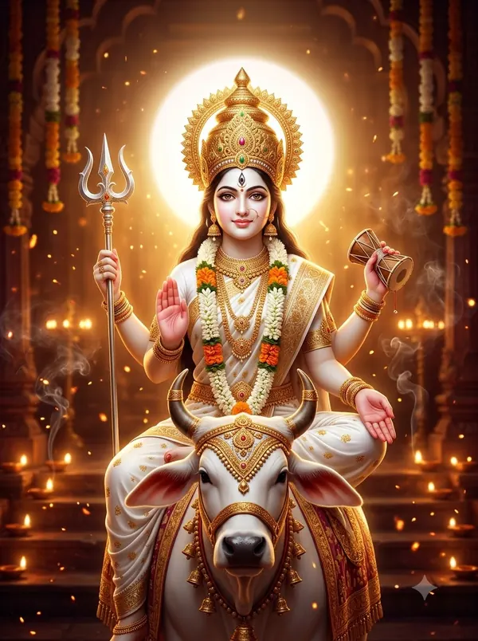

पार्वती चालीसा — पूरे बोल और अर्थ
‘जय गिरि तनये दक्षजे, शम्भु प्रिये गुणखानि’ वाली पार्वती चालीसा में माँ के रूप-शृंगार, नीलकंठ शिव की महिमा, कठोर तप से ‘उमा’ नाम पड़ने और शिव से विवाह की कथा है।
हरतालिका तीज, गणगौर, सोमवार और मंगला गौरी व्रत में — साथ में पार्वती आरती।

दोहा
जय गिरि तनये दक्षजे, शम्भु प्रिये गुणखानि। गणपति जननी पार्वती, अम्बे शक्ति भवानि॥
हे हिमालय की पुत्री, दक्ष की बेटी (सती), शिव की प्रिया, गुणों की खान, गणेश की माता पार्वती, अंबे, शक्ति, भवानी — आपकी जय हो।
चौपाई
ब्रह्मा भेद न तुम्हरो पावे। पंच बदन नित तुमको ध्यावे॥
ब्रह्मा भी आपका रहस्य नहीं जान पाते; पाँच मुख वाले शिव रोज़ आपका ध्यान करते हैं।
षड्मुख कहि न सकत यश तेरो। सहसबदन श्रम करत घनेरो॥
छह मुख वाले कार्तिकेय भी आपका यश नहीं कह पाते; हज़ार मुख वाले शेषनाग भी बहुत परिश्रम करते हैं —
तेऊ पार न पावत माता। स्थित रक्षा लय हिय सजाता॥
— फिर भी हे माता, वे पार नहीं पाते; सृष्टि, रक्षा और प्रलय आप ही के हृदय में है।
अधर प्रवाल सदृश अरुणारे। अति कमनीय नयन कजरारे॥
आपके होंठ मूँगे जैसे लाल हैं और काजल लगे नेत्र अति सुंदर हैं।
ललित ललाट विलेपित केशर। कुंकुम अक्षत शोभा मनहर॥
सुंदर माथे पर केसर लगा है; कुमकुम और अक्षत की शोभा मन हर लेती है।
कनक बसन कंचुकि सजाए। कटि मेखला दिव्य लहराए॥
सुनहरे वस्त्र और चोली सजी है; कमर पर दिव्य करधनी लहराती है।
कंठ मदार हार की शोभा। जाहि देखि सहजहि मन लोभा॥
गले में मंदार के फूलों का हार है, जिसे देखकर मन सहज ही मोहित हो जाता है।
बालारुण अनंत छबि धारी। आभूषण की शोभा प्यारी॥
उगते सूरज जैसी अनंत छवि और गहनों की प्यारी शोभा है।
नाना रत्न जड़ित सिंहासन। तापर राजति हरि चतुरानन॥
अनेक रत्नों से जड़ा सिंहासन है, जिसकी सेवा में विष्णु और ब्रह्मा भी रहते हैं।
इन्द्रादिक परिवार पूजित। जग मृग नाग यक्ष रव कूजित॥
इंद्र आदि देवता परिवार सहित आपको पूजते हैं; संसार के पशु, नाग, यक्ष आपका गुणगान करते हैं।
गिर कैलास निवासिनी जय जय। कोटिक प्रभा विकासिनी जय जय॥
हे कैलास पर्वत पर रहने वाली, करोड़ों प्रकाश फैलाने वाली, आपकी जय हो।
त्रिभुवन सकल कुटुंब तिहारी। अणु अणु महं तुम्हारी उजियारी॥
तीनों लोक आपका परिवार हैं; हर कण में आपका ही प्रकाश है।
हैं महेश प्राणेश तुम्हारे। त्रिभुवन के जो नित रखवारे॥
महेश आपके प्राणनाथ हैं, जो तीनों लोकों के सदा रखवाले हैं।
उनसो पति तुम प्राप्त कीन्ह जब। सुकृत पुरातन उदित भए तब॥
जब आपने उन्हें पति रूप में पाया, तब आपके पुराने पुण्य फलित हुए।
बूढ़ा बैल सवारी जिनकी। महिमा का गावे कोउ तिनकी॥
जिनकी सवारी बूढ़ा बैल (नंदी) है, उनकी महिमा कौन गा सकता है!
सदा श्मशान बिहारी शंकर। आभूषण हैं भुजंग भयंकर॥
शंकर सदा श्मशान में विचरते हैं और भयंकर साँप उनके गहने हैं।
कण्ठ हलाहल को छबि छायी। नीलकण्ठ की पदवी पायी॥
गले में हलाहल विष की छवि है, जिससे उन्होंने नीलकंठ की पदवी पाई।
देव मगन के हित अस किन्हो। विष लै आपु तिनहि अमि दिन्हो॥
देवताओं के भले के लिए उन्होंने ऐसा किया — विष खुद लिया और उन्हें अमृत दिया।
ताकी तुम पत्नी छवि धारिणी। दुरित विदारिणी मंगल कारिणी॥
आप उन्हीं की सुंदर पत्नी हैं — पाप मिटाने वाली और मंगल करने वाली।
देखि परम सौंदर्य तिहारो। त्रिभुवन चकित बनावन हारो॥
आपका परम सौंदर्य देखकर तीनों लोकों को बनाने वाले भी चकित हैं।
भय भीता सो माता गंगा। लज्जा मय है सलिल तरंगा॥
(आपके सौंदर्य से) माता गंगा भी डरकर लजा गईं; उनकी लहरें लज्जा से भर गईं।
सौत समान शम्भु पह आयी। विष्णु पदाब्ज छोड़ि सो धायी॥
सौत की तरह गंगा विष्णु के चरण छोड़कर शिव जी के पास दौड़ी आईं।
तेहि कों कमल बदन मुरझायो। लखी सत्वर शिव शीश चढ़ायो॥
उनका कमल जैसा मुख मुरझा गया; यह देखकर शिव ने उन्हें तुरंत सिर पर धारण कर लिया।
नित्यानंद करी बरदायिनी। अभय भक्त कर नित अनपायिनी॥
आप सदा आनंद देने वाली, वरदायिनी हैं; भक्तों को अभय देती हैं और कभी उनका साथ नहीं छोड़तीं।
अखिल पाप त्रयताप निकन्दिनी। माहेश्वरी हिमालय नन्दिनी॥
आप सारे पाप और तीनों ताप नष्ट करने वाली माहेश्वरी, हिमालय की पुत्री हैं।
काशी पुरी सदा मन भायी। सिद्ध पीठ तेहि आपु बनायी॥
काशी नगरी आपको सदा प्रिय रही; आपने उसे सिद्ध पीठ बनाया।
भगवती प्रतिदिन भिक्षा दात्री। कृपा प्रमोद सनेह विधात्री॥
हे भगवती, आप (अन्नपूर्णा रूप में) रोज़ भिक्षा देती हैं; कृपा, आनंद और स्नेह देने वाली हैं।
रिपुक्षय कारिणी जय जय अम्बे। वाचा सिद्ध करि अवलम्बे॥
शत्रुओं का नाश करने वाली अंबे, आपकी जय हो; आप वाणी को सिद्ध करती और सहारा देती हैं।
गौरी उमा शंकरी काली। अन्नपूर्णा जग प्रतिपाली॥
आप ही गौरी, उमा, शंकरी, काली और जगत का पालन करने वाली अन्नपूर्णा हैं।
सब जन की ईश्वरी भगवती। पतिप्राणा परमेश्वरी सती॥
आप सब लोगों की ईश्वरी भगवती हैं; पति को प्राण मानने वाली परमेश्वरी सती हैं।
तुमने कठिन तपस्या कीनी। नारद सों जब शिक्षा लीनी॥
नारद जी से सीख लेकर आपने कठिन तपस्या की।
अन्न न नीर न वायु अहारा। अस्थि मात्र तन भयउ तुम्हारा॥
न अन्न, न जल, न वायु का आहार — आपका शरीर केवल हड्डियों का रह गया।
पत्र घास को खाद्य न भायउ। उमा नाम तब तुमने पायउ॥
आपने पत्ते और घास तक खाना छोड़ दिया (‘उ मा’ — मत करो), तब आपका नाम उमा पड़ा।
तप बिलोकि ऋषि सात पधारे। लगे डिगावन डिगी न हारे॥
आपका तप देखकर सप्तऋषि आए और आपको डिगाने लगे, पर आप नहीं डिगीं; वे हार गए।
तब तब जय जय जय उच्चारेउ। सप्तऋषि निज गेह सिधारेउ॥
तब वे जय-जयकार करते हुए अपने घर लौट गए।
सुर विधि विष्णु पास तब आए। वर देने के वचन सुनाए॥
फिर देवता, ब्रह्मा और विष्णु आपके पास आए और वर देने की बात कही।
मांगे उमा वर पति तुम तिनसों। चाहत जग त्रिभुवन निधि जिनसों॥
हे उमा, आपने उनसे वही पति माँगा, जिनसे तीनों लोक अपनी निधि चाहते हैं (शिव)।
एवमस्तु कहि ते दोऊ गए। सुफल मनोरथ तुमने लए॥
‘ऐसा ही हो’ कहकर वे चले गए और आपका मनोरथ सफल हुआ।
करि विवाह शिव सों हे भामा। पुनः कहाई हर की बामा॥
हे सुंदरी, शिव से विवाह करके आप फिर से हर की अर्धांगिनी कहलाईं।
जो पढ़िहै जन यह चालीसा। धन जन सुख देइहै तेहि ईसा॥
जो यह चालीसा पढ़ेगा, उसे भगवान शिव धन, परिवार और सुख देंगे।
दोहा
कूटि चंद्रिका सुभग शिर, जयति जयति सुख खानि। पार्वती निज भक्त हित, रहहु सदा वरदानि॥
सिर पर सुंदर चंद्रमा धारण करने वाली, सुख की खान, आपकी जय हो; हे पार्वती, अपने भक्तों के लिए सदा वरदायिनी बनी रहिए।
पार्वती चालीसा का पाठ पूरा हुआ।
किसी अपने को WhatsApp पर भेजेंपाठ पारंपरिक है और अलग-अलग क्षेत्रों में शब्दों में थोड़ा अंतर मिलता है। अर्थ सरल हिंदी में OmKiran Bhakti ने लिखा है। कोई त्रुटि दिखे तो YouTube पर कमेंट करके बताएँ।